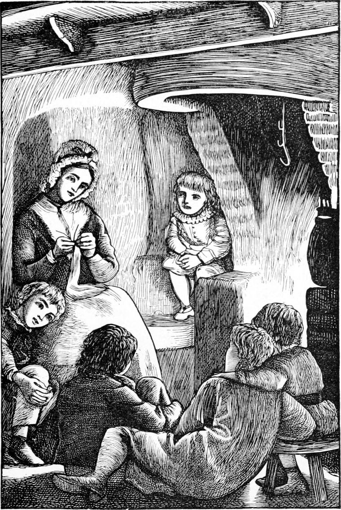

We were more than ever at the farm now. During the summer, from the time we got up till the time we went to bed, we seldom approached the manse. I have heard it hinted that my father neglected us. But that can hardly be, seeing that then his word was law to us, and now I regard his memory as the symbol of the love unspeakable. My elder brother Tom always had his meals with him, and sat at his lessons in the study. But my father did not mind the younger ones running wild, so long as there was a Kirsty for them to run to; and indeed the men also were not only friendly to us, but careful over us. No doubt we were rather savage, very different in our appearance from town-bred children, who are washed and dressed every time they go out for a walk: that we should have considered not merely a hardship, but an indignity. To be free was all our notion of a perfect existence. But my father’s rebuke was awful indeed, if he found even the youngest guilty of untruth, or cruelty, or injustice. At all kinds of escapades, not involving disobedience, he smiled, except indeed there were too much danger, when he would warn and limit.
A town boy may wonder what we could find to amuse us all day long; but the fact is almost everything was an amusement, seeing that when we could not take a natural share in what was going on, we generally managed to invent some collateral employment fictitiously related to it. But he must not think of our farm as at all like some great farm he may happen to know in England; for there was nothing done by machinery on the place. There may be great pleasure in watching machine-operations, but surely none to equal the pleasure we had. If there had been a steam engine to plough my father’s fields, how could we have ridden home on its back in the evening? To ride the horses home from the plough was a triumph. Had there been a thrashing- machine, could its pleasures have been comparable to that of lying in the straw and watching the grain dance from the sheaves under the skilful flails of the two strong men who belaboured them? There was a winnowing-machine, but quite a tame one, for its wheel I could drive myself—the handle now high as my head, now low as my knee—and watch at the same time the storm of chaff driven like drifting snowflakes from its wide mouth. Meantime the oat-grain was flowing in a silent slow stream from the shelving hole in the other side, and the wind, rushing through the opposite doors, aided the winnower by catching at the expelled chaff, and carrying it yet farther apart. I think I see old Eppie now, filling her sack with what the wind blew her; not with the grain: Eppie did not covet that; she only wanted her bed filled with fresh springy chaff, on which she would sleep as sound as her rheumatism would let her, and as warm and dry and comfortable as any duchess in the land that happened to have the rheumatism too. For comfort is inside more than outside; and eider down, delicious as it is, has less to do with it than some people fancy. How I wish all the poor people in the great cities could have good chaff beds to lie upon! Let me see: what more machines are there now? More than I can tell. I saw one going in the fields the other day, at the use of which I could only guess. Strange, wild-looking, mad-like machines, as the Scotch would call them, are growling and snapping, and clinking and clattering over our fields, so that it seems to an old boy as if all the sweet poetic twilight of things were vanishing from the country; but he reminds himself that God is not going to sleep, for, as one of the greatest poets that ever lived says, he slumbereth not nor sleepeth; and the children of the earth are his, and he will see that their imaginations and feelings have food enough and to spare. It is his business this—not ours. So the work must be done as well as it can. Then, indeed, there will be no fear of the poetry.
I have just alluded to the pleasure of riding the horses, that is, the work-horses: upon them Allister and I began to ride, as far as I can remember, this same summer—not from the plough, for the ploughing was in the end of the year and the spring. First of all we were allowed to take them at watering-time, watched by one of the men, from the stable to the long trough that stood under the pump. There, going hurriedly and stopping suddenly, they would drop head and neck and shoulders like a certain toy-bird, causing the young riders a vague fear of falling over the height no longer defended by the uplifted crest; and then drink and drink till the riders’ legs felt the horses’ bodies swelling under them; then up and away with quick refreshed stride or trot towards the paradise of their stalls. But for us came first the somewhat fearful pass of the stable door, for they never stopped, like better educated horses, to let their riders dismount, but walked right in, and there was just room, by stooping low, to clear the top of the door. As we improved in equitation, we would go afield, to ride them home from the pasture, where they were fastened by chains to short stakes of iron driven into the earth. There was more of adventure here, for not only was the ride longer, but the horses were more frisky, and would sometimes set off at the gallop. Then the chief danger was again the door, lest they should dash in, and knock knees against posts and heads against lintels, for we had only halters to hold them with. But after I had once been thrown from back to neck, and from neck to ground in a clumsy but wild gallop extemporized by Dobbin, I was raised to the dignity of a bridle, which I always carried with me when we went to fetch them. It was my father’s express desire that until we could sit well on the bare back we should not be allowed a saddle. It was a whole year before I was permitted to mount his little black riding mare, called Missy. She was old, it is true—nobody quite knew how old she was—but if she felt a light weight on her back, either the spirit of youth was contagious, or she fancied herself as young as when she thought nothing of twelve stone, and would dart off like the wind. In after years I got so found of her, that I would stand by her side flacking the flies from her as she grazed; and when I tired of that, would clamber upon her back, and lie there reading my book, while she plucked on and ground and mashed away at the grass as if nobody were near her.
Then there was the choice, if nothing else were found more attractive, of going to the field where the cattle were grazing. Oh! the rich hot summer afternoons among the grass and the clover, the little lamb-daisies, and the big horse-daisies, with the cattle feeding solemnly, but one and another straying now to the corn, now to the turnips, and recalled by stern shouts, or, if that were unavailing, by vigorous pursuit and even blows! If I had been able to think of a mother at home, I should have been perfectly happy. Not that I missed her then; I had lost her too young for that. I mean that the memory of the time wants but that to render it perfect in bliss. Even in the cold days of spring, when, after being shut up all the winter, the cattle were allowed to revel again in the springing grass and the venturesome daisies, there was pleasure enough in the company and devices of the cowherd, a freckle-faced, white-haired, weak-eyed boy of ten, named—I forget his real name: we always called him Turkey, because his nose was the colour of a turkey’s egg. Who but Turkey knew mushrooms from toadstools? Who but Turkey could detect earth-nuts—and that with the certainty of a truffle-hunting dog? Who but Turkey knew the note and the form and the nest and the eggs of every bird in the country? Who but Turkey, with his little whip and its lash of brass wire, would encounter the angriest bull in Christendom, provided he carried, like the bulls of Scotland, his most sensitive part, the nose, foremost? In our eyes Turkey was a hero. Who but Turkey could discover the nests of hens whose maternal anxiety had eluded the finesse of Kirsty? and who so well as he could roast the egg with which she always rewarded such a discovery? Words are feeble before the delight we experienced on such an occasion, when Turkey, proceeding to light a fire against one of the earthen walls which divided the fields, would send us abroad to gather sticks and straws and whatever outcast combustibles we could find, of which there was a great scarcity, there being no woods or hedges within reach. Who like Turkey could rob a wild bee’s nest? And who could be more just than he in distributing the luscious prize? In fine, his accomplishments were innumerable. Short of flying, we believed him capable of everything imaginable.
What rendered him yet dearer to us, was that there was enmity between him and Mrs. Mitchell. It came about in this way. Although a good milker, and therefore of necessity a good feeder, Hawkie was yet upon temptation subject to the inroads of an unnatural appetite. When she found a piece of an old shoe in the field, she would, if not compelled to drop the delicious mouthful, go on, the whole morning or afternoon, in the impossibility of a final deglutition, chewing and chewing at the savoury morsel. Should this have happened, it was in vain for Turkey to hope escape from the discovery of his inattention, for the milk-pail would that same evening or next morning reveal the fact to Kirsty’s watchful eyes. But fortunately for us, in so far as it was well to have an ally against our only enemy, Hawkie’s morbid craving was not confined to old shoes. One day when the cattle were feeding close by the manse, she found on the holly-hedge which surrounded it, Mrs. Mitchell’s best cap, laid out to bleach in the sun. It was a tempting morsel—more susceptible of mastication than shoe-leather. Mrs. Mitchell, who had gone for another freight of the linen with which she was sprinkling the hedge, arrived only in time to see the end of one of its long strings gradually disappearing into Hawkie’s mouth on its way after the rest of the cap, which had gone the length of the string farther. With a wild cry of despair she flew at Hawkie, so intent on the stolen delicacy as to be more open to a surprise than usual, and laying hold of the string, drew from her throat the deplorable mass of pulp to which she had reduced the valued gaud. The same moment Turkey, who had come running at her cry, received full in his face the slimy and sloppy extract. Nor was this all, for Mrs. Mitchell flew at him in her fury, and with an outburst of abuse boxed his ears soundly, before he could recover his senses sufficiently to run for it. The degradation of this treatment had converted Turkey into an enemy before ever he knew that we also had good grounds for disliking her. His opinion concerning her was freely expressed to us if to no one else, generally in the same terms. He said she was as bad as she was ugly, and always spoke of her as the old witch.
But what brought Turkey and us together more than anything else, was that he was as fond of Kirsty’s stories as we were; and in the winter especially we would sit together in the evening, as I have already said, round her fire and the great pot upon it full of the most delicious potatoes, while Kirsty knitted away vigorously at her blue broad-ribbed stockings, and kept a sort of time to her story with the sound of her needles. When the story flagged, the needles went slower; in the more animated passages they would become invisible for swiftness, save for a certain shimmering flash that hovered about her fingers like a dim electric play; but as the story approached some crisis, their motion would at one time become perfectly frantic, at another cease altogether, as finding the subject beyond their power of accompanying expression. When they ceased, we knew that something awful indeed was at hand.
In my next chapter I will give a specimen of her stories, choosing one which bears a little upon an after adventure.
